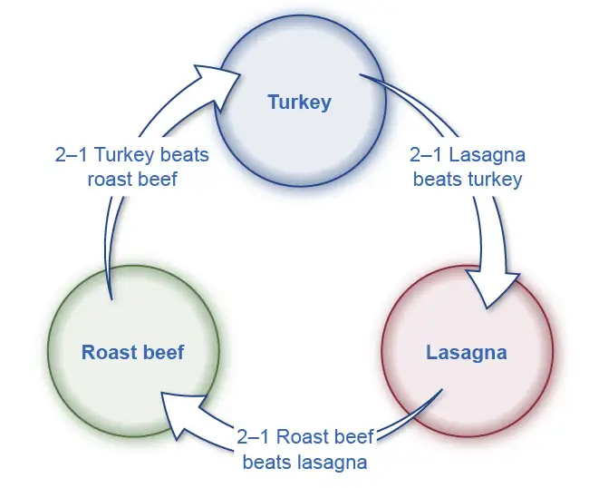

Chapter 18: Public Economy¶
Introduction¶
Bring It Home: Chinese Tire Tariffs
Do you know where the tires on your car are made? If they were imported, they may be subject to a tariff (a tax on imported goods) that could raise the price of your car. What do you think about that tariff? Would you write to your representative or your senator about it? Would you start a Facebook or Twitter campaign?
Most people are unlikely to fight this kind of tax or even inform themselves about the issue in the first place. In The Logic of Collective Action (1965), economist Mancur Olson challenged the popular idea that, in a democracy, the majority view will prevail, and in doing so launched the modern study of public economy, sometimes referred to as public choice, a subtopic of microeconomics. In this chapter, we will look at the economics of government policy, why smaller, more organized groups have an incentive to work hard to enact certain policies, and why lawmakers ultimately make decisions that may result in bad economic policy.
Chapter Outline: Introduction to Public Economy
In this chapter, you will learn about:
- Voter Participation and Costs of Elections
- Special Interest Politics
- Flaws in the Democratic System of Government
As President Abraham Lincoln famously said in his 1863 Gettysburg Address, democratic governments are supposed to be “of the people, by the people, and for the people.” Can we rely on democratic governments to enact sensible economic policies? After all, they react to voters, not to analyses of demand and supply curves. The main focus of an economics course is, naturally enough, to analyze the characteristics of markets and purely economic institutions. However, political institutions also play a role in allocating society’s scarce resources, and economists have played an active role, along with other social scientists, in analyzing how such political institutions work.
Other chapters of this book discuss situations in which market forces can sometimes lead to undesirable results: monopoly, imperfect competition, and antitrust policy; negative and positive externalities; poverty and inequality of incomes; failures to provide insurance; and financial markets that may go from boom to bust. Many of these chapters suggest that the government's economic policies could address these issues.
However, just as markets can face issues and problems that lead to undesirable outcomes, a democratic system of government can also make mistakes, either by enacting policies that do not benefit society as a whole or by failing to enact policies that would have benefited society as a whole. This chapter discusses some practical difficulties of democracy from an economic point of view: we presume the actors in the political system follow their own self-interest, which is not necessarily the same as the public good. For example, many of those who are eligible to vote do not, which obviously raises questions about whether a democratic system will reflect everyone’s interests. Benefits or costs of government action are sometimes concentrated on small groups, which in some cases may organize and have a disproportionately large impact on politics and in other cases may fail to organize and end up neglected. A legislator who worries about support from voters in their district may focus on spending projects specific to the district without sufficient concern for whether this spending is in the nation's interest.
When more than two choices exist, the principle that the majority of voters should decide may not always make logical sense, because situations can arise where it becomes literally impossible to decide what the “majority” prefers. Government may also be slower than private firms to correct its mistakes, because government agencies do not face competition or the threat of new entry.
18.1 Voter Participation and Costs of Elections¶
Learning Objectives
By the end of this section, you will be able to:
- Explain the significance of rational ignorance
- Evaluate the impact of election expenses
In U.S. presidential elections over the last few decades, about 55% to 65% of voting-age citizens actually voted, according to the U.S. Census. In congressional elections when there is no presidential race, or in local elections, the turnout is typically lower, often less than half the eligible voters. In other countries, the share of adults who vote is often higher. For example, in national elections since the 1980s in Germany, Spain, and France, about 75% to 80% of those of voting age cast ballots. Even this total falls well short of 100%. Some countries have laws that require voting, among them Australia, Belgium, Italy, Greece, Turkey, Singapore, and most Latin American nations. At the time the United States was founded, voting was mandatory in Virginia, Maryland, Delaware, and Georgia. Even if the law can require people to vote, however, no law can require that each voter cast an informed or a thoughtful vote. Moreover, in the United States and in most countries around the world, the freedom to vote has also typically meant the freedom not to vote.
Why do people not vote? Perhaps they do not care too much about who wins, or they are uninformed about who is running, or they do not believe their vote will matter or change their lives in any way. These reasons are probably tied together, since people who do not believe their vote matters will not bother to become informed or care who wins. Economists have suggested why a utility-maximizing person might rationally decide not to vote or not to become informed about the election. While a single vote may decide a few elections in very small towns, in most elections of any size, the Board of Elections measures the margin of victory in hundreds, thousands, or even millions of votes. A rational voter will recognize that one vote is extremely unlikely to make a difference. This theory of rational ignorance holds that people will not vote if the costs of becoming informed and voting are too high, or they feel their vote will not be decisive in the election.
In a 1957 work, An Economic Theory of Democracy, the economist Anthony Downs stated the problem this way: “It seems probable that for a great many citizens in a democracy, rational behavior excludes any investment whatever in political information per se. No matter how significant a difference between parties is revealed to the rational citizen by his free information, or how uncertain he is about which party to support, he realizes that his vote has almost no chance of influencing the outcome… He will not even utilize all the free information available, since assimilating it takes time.” In his classic 1948 novel Walden Two, the psychologist B. F. Skinner puts the issue even more succinctly via one of his characters, who states: “The chance that one man’s vote will decide the issue in a national election…is less than the chance that he will be killed on his way to the polls.” The following Clear It Up feature explores another aspect of the election process: spending.
Clear It Up: How much is too much to spend on an election?
In the 2020 elections, it is estimated that spending for president, Congress, and state and local offices amounted to $14.4 billion, more than twice what had been spent in 2016. The money raised went to the campaigns, including advertising, fundraising, travel, and staff. Many people worry that politicians spend too much time raising money and end up entangled with special interest groups that make major donations. Critics would prefer a system that restricts what candidates can spend, perhaps in exchange for limited public campaign financing or free television advertising time.
How much spending on campaigns is too much? Five billion dollars will buy many potato chips, but in the U.S. economy, which was nearly $21 trillion in 2020, the $14.4 billion spent on political campaigns was about 1/15th of 1% of the overall economy. Here is another way to think about campaign spending. Total government spending programs in 2020, including federal and state governments, was about $8.8 trillion, so the cost of choosing the people who would determine how to spend this money was less than 2/10 of 1% of that. In the context of the enormous U.S. economy, $14.4 billion is not as much money as it sounds. U.S. consumers spend almost $2 billion per year on toothpaste and $7 billion on hair care products. In 2020, Proctor and Gamble spent almost $5 billion on advertising. It may seem peculiar that one company’s spending on advertisements amounts to one third of what is spent on presidential and other elections.
Whatever we believe about whether candidates and their parties spend too much or too little on elections, the U.S. Supreme Court has placed limits on how government can limit campaign spending. In a 1976 decision, Buckley v. Valeo, the Supreme Court emphasized that the First Amendment to the U.S. Constitution specifies freedom of speech. The federal government and states can offer candidates a voluntary deal in which government makes some public financing available to candidates, but only if the candidates agree to abide by certain spending limits. Of course, candidates can also voluntarily agree to set certain spending limits if they wish. However, government cannot forbid people or organizations to raise and spend money above these limits if they choose.
In 2002, Congress passed and President George W. Bush signed into law the Bipartisan Campaign Reform Act (BCRA). The relatively noncontroversial portions of the act strengthen the rules requiring full and speedy disclosure of who contributes money to campaigns. However, some controversial portions of the Act limit the ability of individuals and groups to make certain kinds of political donations and they ban certain kinds of advertising in the months leading up to an election. Some called these bans into question after the release of two films: Michael Moore’s Fahrenheit 9/11 and Citizens United’s Hillary: The Movie. At question was whether each film sought to discredit political candidates for office too close to an election, in violation of the BCRA. The lower courts found that Moore’s film did not violate the Act, while Citizens United’s did. The fight reached the Supreme Court, as Citizens United v. Federal Election Commission, saying that the First Amendment protects the rights of corporations as well as individuals to donate to political campaigns. The Court ruled, in a 5–4 decision, that the spending limits were unconstitutional. This controversial decision, which essentially allows unlimited contributions by corporations to political action committees, overruled several previous decisions and will likely be revisited in the future, due to the strength of the public reaction. For now, it has resulted in a sharp increase in election spending.
While many U.S. adults do not bother to vote in presidential elections, more than half do. What motivates them? Research on voting behavior has indicated that people who are more settled or more “connected” to society tend to vote more frequently. According to the Washington Post, more married people vote than single people. Those with a job vote more than the unemployed. Those who have lived longer in a neighborhood are more likely to vote than newcomers. Those who report that they know their neighbors and talk to them are more likely to vote than socially isolated people. Those with a higher income and level of education are also more likely to vote. These factors suggest that politicians are likely to focus more on the interests of married, employed, well-educated people with at least a middle-class level of income than on the interests of other groups. For example, those who vote may tend to be more supportive of financial assistance for the two-year and four-year colleges they expect their children to attend than they are of medical care or public school education aimed at families of unemployed people and those experiencing poverty.
Link It Up
Visit this website to see a breakdown of how different groups voted in 2020.
There have been many proposals to encourage greater voter turnout: making it easier to register to vote, keeping the polls open for more hours, or even moving Election Day to the weekend, when fewer people need to worry about jobs or school commitments. However, such changes do not seem to have caused a long-term upward trend in the number of people voting. After all, casting an informed vote will always impose some costs of time and energy. It is not clear how to strengthen people’s feeling of connectedness to society in a way that will lead to a substantial increase in voter turnout. Without greater voter turnout, however, politicians elected by the votes of 60% or fewer of the population may not enact economic policy in the best interests of 100% of the population. Meanwhile, countering a long trend toward making voting easier, many states have recently enacted new voting laws that critics say are actually barriers to voting. States have passed laws reducing early voting, restricting groups who are organizing get-out-the-vote efforts, enacted strict photo ID laws, as well as laws that require showing proof of U.S. citizenship. The ACLU argues that while these laws profess to prevent voter fraud, they are in effect making it harder for individuals to cast their vote.
18.2 Special Interest Politics¶
Learning Objectives
By the end of this section, you will be able to:
- Explain how special interest groups and lobbyists can influence campaigns and elections
- Describe pork-barrel spending and logrolling
Many political issues are of intense interest to a relatively small group, as we noted above. For example, many U.S. drivers do not much care where their car tires were made—they just want good quality as inexpensively as possible. In September 2009, President Obama and Congress enacted a tariff (taxes added on imported goods) on tires imported from China that would increase the price by 35 percent in its first year, 30 percent in its second year, and 25 percent in its third year. Interestingly, the U.S. companies that make tires did not favor this step, because most of them also import tires from China and other countries. (See Globalization and Protectionism for more on tariffs.) However, the United Steelworkers union, which had seen jobs in the tire industry fall by 5,000 over the previous five years, lobbied fiercely for the tariff. With this tariff, the cost of all tires increased significantly. (See the closing Bring It Home feature at the end of this chapter for more information on the tire tariff.)
Special interest groups are groups that are small in number relative to the nation, but quite well organized and focused on a specific issue. A special interest group can pressure legislators to enact public policies that do not benefit society as a whole. Imagine an environmental rule to reduce air pollution that will cost 10 large companies $8 million each, for a total cost of $80 million. The social benefits from enacting this rule provide an average benefit of $10 for every person in the United States; there are roughly 340 million people in the United States, for a total of about $3.4 billion. Even though the benefits are far higher than the costs for society as a whole, the 10 companies are likely to lobby much more fiercely to avoid $8 million in costs than the average person is to argue for $10 worth of benefits.
As this example suggests, we can relate the problem of special interests in politics to an issue we raised in Environmental Protection and Negative Externalities about economic policy with respect to negative externalities and pollution—the problem called regulatory capture (which we defined in Monopoly and Antitrust Policy). In legislative bodies and agencies that write laws and regulations about how much corporations will pay in taxes, or rules for safety in the workplace, or instructions on how to satisfy environmental regulations, you can be sure the specific industry affected has lobbyists who study every word and every comma. They talk with the legislators who are writing the legislation and suggest alternative wording. They contribute to the campaigns of legislators on the key committees—and may even offer those legislators high-paying jobs after they have left office. As a result, it often turns out that those regulated can exercise considerable influence over the regulators.
Link It Up
Visit this website to read about lobbying.
In the early 2000s, about 40 million people in the United States were eligible for Medicare, a government program that provides health insurance for those 65 and older. On some issues, the elderly are a powerful interest group. They donate money and time to political campaigns, and in the 2020 presidential election, 76% of those ages 65–74 voted, while just 51% of those aged 18 to 24 cast a ballot, according to the U.S. Census.
In 2003, Congress passed and President George Bush signed into law a substantial expansion of Medicare that helped the elderly to pay for prescription drugs. The prescription drug benefit cost the federal government about $40 billion in 2006, and the Medicare system projected that the annual cost would rise to $121 billion by 2016. The political pressure to pass a prescription drug benefit for Medicare was apparently quite high, while the political pressure to assist the 40 million with no health insurance at all was considerably lower. One reason might be that the American Association for Retired People AARP, a well-funded and well-organized lobbying group represents senior citizens, while there is no umbrella organization to lobby for those without health insurance.
In the battle over passage of the 2010 Affordable Care Act (ACA), which became known as “Obamacare,” there was heavy lobbying on all sides by insurance companies and pharmaceutical companies. However, labor unions and community groups financed a lobby group, Health Care for America Now (HCAN), to offset corporate lobbying. HCAN, spending $60 million dollars, was successful in helping pass legislation which added new regulations on insurance companies and a mandate that all individuals will obtain health insurance by 2014. The following Work It Out feature further explains voter incentives and lobbyist influence.
Work It Out: Paying To Get Your Way
Suppose Congress proposes a tax on carbon emissions for certain factories in a small town of 10,000 people. Congress estimates the tax will reduce pollution to such an extent that it will benefit each resident by an equivalent of $300. The tax will also reduce profits to the town’s two large factories by $1 million each. How much should the factory owners be willing to spend to fight the tax passage, and how much should the townspeople be willing to pay to support it? Why is society unlikely to achieve the optimal outcome?
Step 1. The two factory owners each stand to lose $1 million if the tax passes, so each should be willing to spend up to that amount to prevent the passage, a combined sum of $2 million. Of course, in the real world, there is no guarantee that lobbying efforts will be successful, so the factory owners may choose to invest an amount that is substantially lower.
Step 2. There are 10,000 townspeople, each standing to benefit by $300 if the tax passes. Theoretically, then, they should be willing to spend up to $3 million (10,000 × $300) to ensure passage. (Again, in the real world with no guarantees of success, they may choose to spend less.)
Step 3. It is costly and difficult for 10,000 people to coordinate in such a way as to influence public policy. Since each person stands to gain only $300, many may feel lobbying is not worth the effort.
Step 4. The two factory owners, however, find it very easy and profitable to coordinate their activities, so they have a greater incentive to do so.
Special interests may develop a close relationship with one political party, so their ability to influence legislation rises and falls as that party moves in or out of power. A special interest may even hurt a political party if it appears to a number of voters that the relationship is too cozy. In a close election, a small group that has been under-represented in the past may find that it can tip the election one way or another—so that group will suddenly receive considerable attention. Democratic institutions produce an ebb and flow of political parties and interests and thus offer both opportunities for special interests and ways of counterbalancing those interests over time.
Identifiable Winners, Anonymous Losers¶
A number of economic policies produce gains whose beneficiaries are easily identifiable, but costs that are partly or entirely shared by a large number who remain anonymous. A democratic political system probably has a bias toward those who are identifiable.
For example, policies that impose price controls—like rent control—may look as if they benefit renters and impose costs only on landlords. However, when landlords then decide to reduce the number of rental units available in the area, a number of people who would have liked to rent an apartment end up living somewhere else because no units were available. These would-be renters have experienced a cost of rent control, but it is hard to identify who they are.
Similarly, policies that block imports will benefit the firms that would have competed with those imports—and workers at those firms—who are likely to be quite visible. Consumers who would have preferred to purchase the imported products, and who thus bear some costs of the protectionist policy, are much less visible.
Specific tax breaks and spending programs also have identifiable winners and impose costs on others who are hard to identify. Special interests are more likely to arise from a group that is easily identifiable, rather than from a group where some of those who suffer may not even recognize they are bearing costs.
Pork Barrels and Logrolling¶
Politicians have an incentive to ensure that they spend government money in their home state or district, where it will benefit their constituents in a direct and obvious way. Thus, when legislators are negotiating over whether to support a piece of legislation, they commonly ask each other to include pork-barrel spending, legislation that benefits mainly a single political district. Pork-barrel spending is another case in which concentrated benefits and widely dispersed costs challenge democracy: the benefits of pork-barrel spending are obvious and direct to local voters, while the costs are spread over the entire country. Read the following Clear It Up feature for more information on pork-barrel spending.
Clear It Up: How much impact can pork-barrel spending have?
Many observers widely regard U.S. Senator Robert C. Byrd of West Virginia, who was originally elected to the Senate in 1958 and served until 2010, as one of the masters of pork-barrel politics, directing a steady stream of federal funds to his home state. A journalist once compiled a list of structures in West Virginia at least partly government funded and named after Byrd: “the Robert C. Byrd Highway; the Robert C. Byrd Locks and Dam; the Robert C. Byrd Institute; the Robert C. Byrd Life Long Learning Center; the Robert C. Byrd Honors Scholarship Program; the Robert C. Byrd Green Bank Telescope; the Robert C. Byrd Institute for Advanced Flexible Manufacturing; the Robert C. Byrd Federal Courthouse; the Robert C. Byrd Health Sciences Center; the Robert C. Byrd Academic and Technology Center; the Robert C. Byrd United Technical Center; the Robert C. Byrd Federal Building; the Robert C. Byrd Drive; the Robert C. Byrd Hilltop Office Complex; the Robert C. Byrd Library; and the Robert C. Byrd Learning Resource Center; the Robert C. Byrd Rural Health Center.” This list does not include government-funded projects in West Virginia that were not named after Byrd. Of course, we would have to analyze each of these expenditures in detail to figure out whether we should treat them as pork-barrel spending or whether they provide widespread benefits that reach beyond West Virginia. At least some of them, or a portion of them, certainly would fall into that category. Because there are currently no term limits for Congressional representatives, those who have been in office longer generally have more power to enact pork-barrel projects.
The amount that government spends on individual pork-barrel projects is small, but many small projects can add up to a substantial total. A nonprofit watchdog organization, called Citizens against Government Waste, produces an annual report, the Pig Book that attempts to quantify the amount of pork-barrel spending, focusing on items that only one member of Congress requested, that were passed into law without any public hearings, or that serve only a local purpose. Whether any specific item qualifies as pork can be controversial. The 2021 Congressional Pig Book identified 285 earmarks in FY 2021, with a cost of $16.8 billion. Recent growth in earmarks and their cost is apparent: in FY 2017, there were 163 earmarks at a cost of $6.8 billion. Hence, in only four years, there was a 75% increase in the number of earmarks and a 147% increase in the cost of those earmarks.
Logrolling, an action in which all members of a group of legislators agree to vote for a package of otherwise unrelated laws that they individually favor, can encourage pork barrel spending. For example, if one member of the U.S. Congress suggests building a new bridge or hospital in their own congressional district, the other members might oppose it. However, if 51% of the legislators come together, they can pass a bill that includes a bridge or hospital for every one of their districts.
As a reflection of this interest of legislators in their own districts, the U.S. government has typically spread out its spending on military bases and weapons programs to congressional districts all across the country. In part, the government does this to help create a situation that encourages members of Congress to vote in support of defense spending.
18.3 Flaws in the Democratic System of Government¶
Learning Objectives
By the end of this section, you will be able to:
- Assess the median voter theory
- Explain the voting cycle
- Analyze the interrelationship between markets and government
Most developed countries today have a democratic system of government: citizens express their opinions through votes and those votes affect the direction of the country. The advantage of democracy over other systems is that it allows everyone in a society an equal say and therefore may reduce the possibility of a small group of wealthy oligarchs oppressing the masses. There is no such thing as a perfect system, and democracy, for all its popularity, is not without its problems, a few of which we will examine here.
We sometimes sum up and oversimplify democracy in two words: “Majority rule.” When voters face three or more choices, however, then voting may not always be a useful way of determining what the majority prefers.
As one example, consider an election in a state where 60% of the population is liberal and 40% is conservative. If there are only two candidates, one from each side, and if liberals and conservatives vote in the same 60–40 proportions in which they are represented in the population, then the liberal will win. What if the election ends up including two liberal candidates and one conservative? It is possible that the liberal vote will split and victory will go to the minority party. In this case, the outcome does not reflect the majority’s preference.
Does the majority view prevail in the case of sugar quotas? Clearly there are more sugar consumers in the United States than sugar producers, but the U.S. domestic sugar lobby (www.sugarcane.org) has successfully argued for protection against imports since 1789. By law, therefore, U.S. cookie and candy makers must use 85% domestic sugar in their products. Meanwhile quotas on imported sugar restrict supply and keep the domestic sugar price up—raising prices for companies that use sugar in producing their goods and for consumers. The European Union allows sugar imports, and prices there are 40% lower than U.S. sugar prices. Sugar-producing countries in the Caribbean repeatedly protest the U.S. quotas at the World Trade Organization meetings, but each bite of cookie, at present, costs you more than if there were no sugar lobby. This case goes against the theory of the “median” voter in a democracy. The median voter theory argues that politicians will try to match policies to what pleases the median voter preferences. If we think of political positions along a spectrum from left to right, the median voter is in the middle of the spectrum. This theory argues that actual policy will reflect “middle of the road.” In the case of sugar lobby politics, the minority, not the median, dominates policy.
Sometimes it is not even clear how to define the majority opinion. Step aside from politics for a moment and think about a choice facing three families (the Ortegas, the Schmidts, and the Alexanders) who are planning to celebrate New Year’s Day together. They agree to vote on the menu, choosing from three entrees, and they agree that the majority vote wins. With three families, it seems reasonable that one producing choice will get a 2–1 majority. What if, however, their vote ends up looking like Table 18.1?
Clearly, the three families disagree on their first choice. However, the problem goes even deeper. Instead of looking at all three choices at once, compare them two at a time. (See Figure 18.2) In a vote of turkey versus beef, turkey wins by 2–1. In a vote of beef versus lasagna, beef wins 2–1. If turkey beats beef, and beef beats lasagna, then it might seem only logical that turkey must also beat lasagna. However, with the preferences, lasagna is preferred to turkey by a 2–1 vote, as well. If lasagna is preferred to turkey, and turkey beats beef, then surely it must be that lasagna also beats beef? Actually, no. Beef beats lasagna. In other words, the majority view may not win. Clearly, as any car salesperson will tell you, the way one presents choices to us influences our decisions.

Table 18.1 Circular Preferences
| The Ortega Family | The Schmidt Family | The Alexander Family | |
|---|---|---|---|
| First Choice | Turkey | Roast beef | Lasagna |
| Second Choice | Roast beef | Lasagna | Turkey |
| Third Choice | Lasagna | Turkey | Roast beef |
We call the situation in which Choice A is preferred by a majority over Choice B, Choice B is preferred by a majority over Choice C, and Choice C is preferred by a majority over Choice A a voting cycle. It is easy to imagine sets of government choices—say, perhaps the choice between increased defense spending, increased government spending on health care, and a tax cut—in which a voting cycle could occur. The result will be determined by the order in which interested parties present and vote on choices, not by majority rule, because every choice is both preferred to some alternative and also not preferred to another alternative.
Link It Up
Visit this website to read about ranked choice voting, a preferential voting system.
Where Is Government’s Self-Correcting Mechanism?¶
When a firm produces a product no one wants to buy or produces at a higher cost than its competitors, the firm is likely to suffer losses. If it cannot change its ways, it will go out of business. This self-correcting mechanism in the marketplace can have harsh effects on workers or on local economies, but it also puts pressure on firms for good performance.
Government agencies, however, do not sell their products in a market. They receive tax dollars instead. They are not challenged by competitors as are private-sector firms. If the U.S. Department of Education or the U.S. Department of Defense is performing poorly, citizens cannot purchase their services from another provider and drive the existing government agencies into bankruptcy. If you are upset that the Internal Revenue Service is slow in sending you a tax refund or seems unable to answer your questions, you cannot decide to pay your income taxes through a different organization. Of course, elected politicians can assign new leaders to government agencies and instruct them to reorganize or to emphasize a different mission. The pressure government faces, however, to change its bureaucracy, to seek greater efficiency, and to improve customer responsiveness is much milder than the threat of being put out of business altogether.
This insight suggests that when government provides goods or services directly, we might expect it to do so with less efficiency than private firms—except in certain cases where the government agency may compete directly with private firms. At the local level, for example, government can provide directly services like garbage collection, using private firms under contract to the government, or by a mix of government employees competing with private firms.
A Balanced View of Markets and Government¶
The British statesman Sir Winston Churchill (1874–1965) once wrote: “No one pretends that democracy is perfect or all-wise. Indeed, it has been said that democracy is the worst form of government except for all of the other forms which have been tried from time to time.” In that spirit, the theme of this discussion is certainly not that we should abandon democratic government. A practical student of public policy needs to recognize that in some cases, like the case of well-organized special interests or pork-barrel legislation, a democratic government may seek to enact economically unwise projects or programs. In other cases, by placing a low priority on the problems of those who are not well organized or who are less likely to vote, the government may fail to act when it could do some good. In these and other cases, there is no automatic reason to believe that government will necessarily make economically sensible choices.
“The true test of a first-rate mind is the ability to hold two contradictory ideas at the same time,” wrote the American author F. Scott Fitzgerald (1896–1940). At this point in your study of microeconomics, you should be able to go one better than Fitzgerald and hold three somewhat contradictory ideas about the interrelationship between markets and government in your mind at the same time.
First, markets are extraordinarily useful and flexible institutions through which society can allocate its scarce resources. We introduced this idea with the subjects of international trade and demand and supply in other chapters and reinforced it in all the subsequent discussions of how households and firms make decisions.
Second, markets may sometimes produce unwanted results. A short list of the cases in which markets produce unwanted results includes monopoly and other cases of imperfect competition, pollution, poverty and inequality of incomes, discrimination, and failure to provide insurance.
Third, while government may play a useful role in addressing the problems of markets, government action is also imperfect and may not reflect majority views. Economists readily admit that, in settings like monopoly or negative externalities, a potential role exists for government intervention. However, in the real world, it is not enough to point out that government action might be a good idea. Instead, we must have some confidence that the government is likely to identify and carry out the appropriate public policy. To make sensible judgments about economic policy, we must see the strengths and weaknesses of both markets and government. We must not idealize or demonize either unregulated markets or government actions. Instead, consider the actual strengths and weaknesses of real-world markets and real-world governments.
These three insights seldom lead to simple or obvious political conclusions. As the famous British economist Joan Robinson wrote some decades ago: “[E]conomic theory, in itself, preaches no doctrines and cannot establish any universally valid laws. It is a method of ordering ideas and formulating questions.” The study of economics is neither politically conservative, nor moderate, nor liberal. There are economists who are Democrats, Republicans, libertarians, socialists, and members of every other political group you can name. Of course, conservatives may tend to emphasize the virtues of markets and the limitations of government, while liberals may tend to emphasize the shortcomings of markets and the need for government programs. Such differences only illustrate that the language and terminology of economics is not limited to one set of political beliefs, but can be used by all.
Bring It Home: Chinese Tire Tariffs
In April 2009, the union representing U.S. tire manufacturing workers filed a request with the U.S. International Trade Commission (ITC), asking it to investigate tire imports from China. Under U.S. trade law, if imports from a country increase to the point that they cause market disruption in the United States, as determined by the ITC, then it can also recommend a remedy for this market disruption. In this case, the ITC determined that from 2004 to 2008, U.S. tire manufacturers suffered declines in production, financial health, and employment as a direct result of increases in tire imports from China. The ITC recommended placing an additional tax on tire imports from China. President Obama and Congress agreed with the ITC recommendation, and in June 2009 tariffs on Chinese tires increased from 4% to 39%. In addition, tariffs on Chinese tires increased further as part of President Trump’s increases on a broad range of Chinese products.
Why would U.S. consumers buy imported tires from China in the first place? Most likely, because they are cheaper than tires produced domestically or in other countries. Therefore, this tariff increase should cause U.S. consumers to pay higher prices for tires, either because Chinese tires are now more expensive, or because U.S. consumers are pushed by the tariff to buy more expensive tires made by U.S. manufacturers or those from other countries. In the end, this tariff made U.S. consumers pay more for tires.
Was this tariff met with outrage expressed via social media, traditional media, or mass protests? Were there “Occupy Wall Street-type” demonstrations? The answer is a resounding “No”. Most U.S. tire consumers were likely unaware of the tariff increase, although they may have noticed the price increase, which was between $4 and $13 depending on the type of tire. Tire consumers are also potential voters. Conceivably, a tax increase, even a small one, might make voters unhappy. However, voters probably realized that it was not worth their time to learn anything about this issue or cast a vote based on it. They probably thought their vote would not matter in determining the outcome of an election or changing this policy.
Estimates of the impact of this tariff show it costs U.S. consumers around $1.11 billion annually. Of this amount, roughly $817 million ends up in the pockets of foreign tire manufacturers other than in China, and the remaining $294 million goes to U.S. tire manufacturers. In other words, the tariff increase on Chinese tires may have saved 1,200 jobs in the domestic tire sector, but it cost 3,700 jobs in other sectors, as consumers had to reduce their spending because they were paying more for tires. People actually lost their jobs as a result of this tariff. Workers in U.S. tire manufacturing firms earned about $40,000 in 2010. Given the number of jobs saved and the total cost to U.S. consumers, the cost of saving one job amounted to $926,500!
This tariff caused a net decline in U.S. social surplus. (We discuss total surplus in the Demand and Supply chapter, and tariffs in the Introduction to International Trade chapter.) Instead of saving jobs, it cost jobs, and those jobs that it saved cost many times more than the people working in them could ever hope to earn. Why would the government do this?
The chapter answers this question by discussing the influence special interest groups have on economic policy. The steelworkers union, whose members make tires, saw increasingly more members lose their jobs as U.S. consumers consumed increasingly more cheap Chinese tires. By definition, this union is relatively small but well organized, especially compared to tire consumers. It stands to gain much for each of its members, compared to what each tire consumer may have to give up in terms of higher prices. Thus, the steelworkers union (joined by domestic tire manufacturers) has not only the means but the incentive to lobby economic policymakers and lawmakers. Given that U.S. tire consumers are a large and unorganized group, if they even are a group, it is unlikely they will lobby against higher tire tariffs. In the end, lawmakers tend to listen to those who lobby them, even though the results make for bad economic policy.
Chapter Review¶
Key Terms¶
- logrolling
- the situation in which groups of legislators all agree to vote for a package of otherwise unrelated laws that they individually favor
- median voter theory
- theory that politicians will try to match policies to what pleases the median voter preferences
- pork-barrel spending
- spending that benefits mainly a single political district
- rational ignorance
- the theory that rational people will not vote if the costs of becoming informed and voting are too high or because they know their vote will not be decisive in the election
- special interest groups
- groups that are small in number relative to the nation, but well organized and thus exert a disproportionate effect on political outcomes
- voting cycle
- the situation in which a majority prefers A over B, B over C, and C over A
Key Concepts and Summary¶
18.1 Voter Participation and Costs of Elections¶
The theory of rational ignorance says voters will recognize that their single vote is extremely unlikely to influence the outcome of an election. As a consequence, they will choose to remain uninformed about issues and not vote. This theory helps explain why voter turnout is so low in the United States.
18.2 Special Interest Politics¶
Special interest politics arises when a relatively small group, called a special interest group, each of whose members has a large interest in a political outcome, devotes considerable time and energy to lobbying for the group’s preferred choice. Meanwhile, the large majority, each of whose members has only a small interest in this issue, pays no attention.
We define pork--barrel spending as legislation whose benefits are concentrated on a single district while the costs are spread widely over the country. Logrolling refers to a situation in which two or more legislators agree to vote for each other’s legislation, which can then encourage pork-barrel spending in many districts.
18.3 Flaws in the Democratic System of Government¶
Majority votes can run into difficulties when more than two choices exist. A voting cycle occurs when, in a situation with at least three choices, choice A is preferred by a majority vote to choice B, choice B is preferred by a majority vote to choice C, and choice C is preferred by a majority vote to choice A. In such a situation, it is impossible to identify what the majority prefers. Another difficulty arises when the vote is so divided that no choice receives a majority.
A practical approach to microeconomic policy will need to take a realistic view of the specific strengths and weaknesses of markets as well as government, rather than making the easy but wrong assumption that either the market or government is always beneficial or always harmful.
Self-Check Questions¶
18.1 Voter Participation and Costs of Elections¶
1. Based on the theory of rational ignorance, what should we expect to happen to voter turnout as the internet makes information easier to obtain?
Answer
All other things being equal, voter turnout should increase as the cost of casting an informed vote decreases.
2. What is the cost of voting in an election?
Answer
The cost in time of voting, transportation costs to and from the polling place, and any additional time and effort spent becoming informed about the candidates.
18.2 Special Interest Politics¶
3. What is the main factor preventing a large community from influencing policy in the same way as a special interest group?
Answer
The costs of organization and the small benefit to the individual.
4. Why might legislators vote to impose a tariff on Egyptian cotton, when consumers in their districts would benefit from its availability?
Answer
Domestic cotton producers would lobby heavily to protect themselves from the competition, whereas the consumers have little incentive to organize.
18.3 Flaws in the Democratic System of Government¶
5. True or false: Majority rule can fail to produce a single preferred outcome when there are more than two choices.
Answer
True. This is exactly what occurs in a voting cycle. That is, the majority can prefer policy A to policy B, policy B to policy C, but also prefer policy C to policy A. Then, the majority will never reach a conclusive outcome.
6. Anastasia, Emma, and Greta are deciding what to do on a weekend getaway. They each suggest a first, second, and third choice and then vote on the options. Table 18.2 shows their first, second, and third choice preferences . Explain why they will have a hard time reaching a decision. Does the group prefer mountain biking to canoeing? What about canoeing compared to the beach? What about the beach compared to the original choice of mountain biking?
Table 18.2
| Anastasia | Emma | Greta | |
|---|---|---|---|
| First Choice | Beach | Mountain biking | Canoeing |
| Second Choice | Mountain biking | Canoeing | Beach |
| Third Choice | Canoeing | Beach | Mountain biking |
Answer
The problem is an example of a voting cycle. The group will vote for mountain biking over canoeing by 2–1. It will vote for canoeing over the beach by 2–1. If mountain biking is preferred to canoeing and canoeing is preferred to the beach, it might seem that it must be true that mountain biking is the favorite. But in a vote of the beach versus mountain biking, the beach wins by a 2–1 vote. When a voting cycle occurs, choosing a single favorite that is always preferred by a majority becomes impossible.
7. Suppose there is an election for Soft Drink Commissioner. The field consists of one candidate from the Pepsi party and four from the Coca-Cola party. This would seem to indicate a strong preference for Coca-Cola among the voting population, but the Pepsi candidate ends up winning in a landslide. Why does this happen?
Answer
The four Coca-Cola candidates compete with each other for Coca-Cola voters, whereas everyone who prefers Pepsi had only one candidate to vote for. Thus the will of the majority is not satisfied.
Review Question¶
18.1 Voter Participation and Costs of Elections¶
8. How does rational ignorance discourage voting?
18.2 Special Interest Politics¶
9. How can a small special interest group win in a situation of majority voting when the benefits it seeks flow only to a small group?
10. How can pork-barrel spending occur in a situation of majority voting when it benefits only a small group?
11. Why do legislators vote for spending projects in districts that are not their own?
18.3 Flaws in the Democratic System of Government¶
12. Why does a voting cycle make it impossible to decide on a majority-approved choice?
13. How does a government agency raise revenue differently from a private company, and how does that affect the way government makes decisions compared to business decisions?
Critical Thinking Questions¶
18.1 Voter Participation and Costs of Elections¶
14. What are some reasons people might find acquiring information about politics and voting rational, in contrast to rational ignorance theory?
15. What are some possible ways to encourage voter participation and overcome rational ignorance?
16. Given that rational ignorance discourages some people from becoming informed about elections, is it necessarily a good idea to encourage greater voter turnout? Why or why not?
18.2 Special Interest Politics¶
17. When Microsoft was founded, the company devoted very few resources to lobbying activities. After a high-profile antitrust case against it, however, the company began to lobby heavily. Why does it make financial sense for companies to invest in lobbyists?
18. Representatives of competing firms often comprise special interest groups. Why are competitors sometimes willing to cooperate in order to form lobbying associations?
19. Special interests do not oppose regulations in all cases. The Marketplace Fairness Act of 2013 would require online merchants to collect sales taxes from their customers in other states. Why might a large online retailer like Amazon.com support such a measure?
20. To ensure safety and efficacy, the Food and Drug Administration regulates the medicines that pharmacies are allowed to sell in the United States. Sometimes this means a company must test a drug for years before it can reach the market. We can easily identify the winners in this system as those who are protected from unsafe drugs that might otherwise harm them. Who are the more anonymous losers who do not benefit from strict medical regulations?
21. How is it possible to bear a cost without realizing it? What are some examples of policies that affect people in ways of which they may not even be aware?
22. Is pork-barrel spending always a bad thing? Can you think of some examples of pork-barrel projects, perhaps from your own district, that have had positive results?
18.3 Flaws in the Democratic System of Government¶
23. The United States currently uses a voting system called “first past the post” in elections, meaning that the candidate with the most votes wins. What are some of the problems with a “first past the post” system?
24. What are some alternatives to a “first past the post” system that might reduce the problem of voting cycles?
25. AT&T spent some $10 million dollars lobbying Congress to block entry of competitors into the telephone market in 1978. Why do you think it efforts failed?
26. Occupy Wall Street was a national (and later global) organized protest against the greed, bank profits, and financial corruption that led to the 2008–2009 recession. The group popularized slogans like “We are the 99%,” meaning it represented the majority against the wealth of the top 1%. Does the fact that the protests had little to no effect on legislative changes support or contradict the chapter?
References¶
References
18.1 Voter Participation and Costs of Elections
Olson, Mancur. The Logic of Collective Action: Public Goods and the Theory of Groups, (Boston: Harvard University Press, 1965).
Downs, Anthony. An Economic Theory of Democracy. New York: Harper, 1957.
Skinner, B.F. Walden Two. Indianapolis: Hackett Publishing Company, Inc., 1948.
American Civil Liberties Union (ACLU). "Voting Rights." https://www.aclu.org/voting-rights.
The New York Times. “The 2012 Money Race: Compare the Candidates.” http://elections.nytimes.com/2012/campaign-finance.
The Washington Post. “Exit Polls 2012: Where Americans Stood this Election.” Last modified November 7, 2012. http://www.washingtonpost.com/wp-srv/special/politics/2012-exit-polls/national-breakdown/.
Cornell University Law School: Legal Information Institute. “Citizens United v. Federal Election Committee (No. 08-205).” Last modified January 21, 2010. http://www.law.cornell.edu/supct/html/08-205.ZS.html.
U.S. Department of Commerce: United States Census Bureau. “Voting and Registration: Historical Time Series Tables; Table A-9: Reported Voting Rates in Presidential Election Years, by Selected Characteristics: November 1964 to 2012.” http://www.census.gov/hhes/www/socdemo/voting/publications/historical/index.html
18.2 Special Interest Politics
Roper Center Public Opinion Archives. “A Brief History of Public Opinion on the Government’s Role in Providing Health Care.” Last modified September 23, 2013.
U.S. Department of Commerce: United States Census Bureau. “Voting and Registration: Historical Time Series Tables; Table A-10: Reported Registration Rates in Presidential Election Years, by Selected Characteristics: November 1968 to 2012.” http://www.census.gov/hhes/www/socdemo/voting/publications/historical/index.html
18.3 Flaws in the Democratic System of Government
Nixon, Ron. “American Candy Makers. Pinched by Inflated Sugar Prices. Look Abroad.” The New York Times. Last modified October 30, 2013. http://www.nytimes.com/2013/10/31/us/american-candy-makers-pinched-by-inflated-sugar-prices-look-abroad.html?_r=0.
Hufbauer, Gary Clyde, and Sean Lowry. “U.S. Tire Tariffs: Saving Few Jobs at High Cost (Policy Brief 12-9).” Peterson Institute for International Economics. Last modified April 2012.
Problems¶
27. Say that the government is considering a ban on smoking in restaurants in Tobaccoville. There are 1 million people living there, and each would benefit by $200 from this smoking ban. However, there are two large tobacco companies in Tobaccoville and the ban would cost them $5 million each. What are the proposed policy's total costs and benefits? Do you think it will pass?
Adapted from Principles of Economics 3e by OpenStax, licensed under CC BY 4.0. Access the original for free at openstax.org. Changes: converted to the web reading format of The Open Book Project.